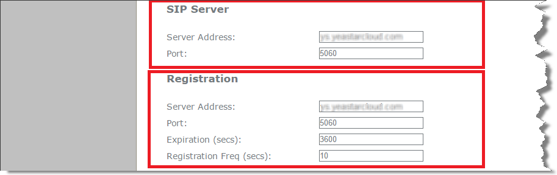

Register an Extension on ALCATEL Phone
Configure the IP address via phone user interface
- Press .
- Choose Static IP and alter the IP Address, Subnet Mask, Preferred DNS Server, Alternate DNS Server.
- Apply it after inputting the correct information.
- Reboot the phone and log in the phone web user interface using the new IP address.
- Enter the user name and password, click Log In to enter the web user interface.
- User Name: admin
- Default Password: admin
Account Registration
- Log in the IP phone, go to , select one account to configure.
- Enable the account and fill in the extension information.
-
Enable Register: check
-
Account Label: The name you want to display on the phone screen.
-
Display Name: The name you want to display on another person's phone screen when you are calling the phone.
-
User Identifier: Enter the extension's Caller ID.
-
Authentication Name: Enter the extension's Registration Name.
-
Authentication Password: Enter the extension's Registration Password.
-
- In the SIP Server section and
Registration section, fill in your PBX
information.

- SIP Server
- Server Address: Enter the domain of your PBX.
- Server Port: Enter the SIP port of your PBX.
- Registration
- Server Address: Enter the domain of your PBX.
- Port: Enter the SIP port of your PBX.
- SIP Server
- Click Apply.
If the registration is successfully, the register status would show "Registered".